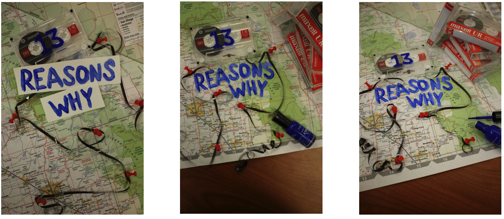

In this project, I redesined a book cover of the young adult novel 13 Reasons Why by Jay Asher. The book centers around the suicide of Hannah Baker and a series of thirteen cassette tapes she left beind to explain all the people in her life that led her to taking her own life. Despite being a beautifully complex novel, I felt the original cover did not showcase it's beauty. The book was written in 2007, but was adapted into a Netflix Orginal Series a decade later. Having gained a much wider audience, I wanted to design a conver that was approachable and relatable for a more modern audience.

The inspiration for this redesign came from it's main charater, Hannah. I wanted to recreate Hannah's desk as she recorded the thirteen tapes in her final days of life, showing the map that would accompany the tapes to encourage her listeners to visit key locations around their town, the blue nail polish she used to mark the tapes with their respective numbers, and finally a cassette tape itself. I wanted to give the reader an inside look at what Hannah saw as she made the tapes and show how she connected the dots between the people in her life to create a linear story of her decision to end her life.
